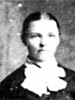
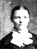
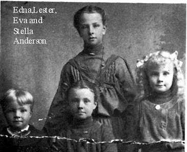
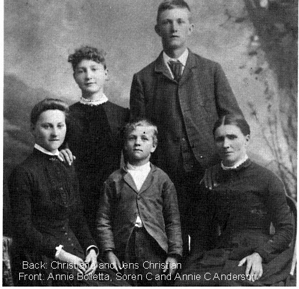

Joseph Smith Anderson Family Information and Photos
Home
Histories
Charts
Photos
Maps
Restricted
News
Info
Contact
   ---> ---> |  12 12 | Joseph Smith Anderson, Annie Margaret Nielson and Ane Catherine Christensen |
Joseph Smith Anderson was the third son of Jens Anderson and Ane Pedersen. He was born October 3,1855, in Fillmore, Utah. When he was 18 days old his father passed away, leaving Anna with three small boys, Peter, Christen and Joseph. Ane married John Lovell in 1857.
In March 1868, the Lovell family moved to Deseret. Ane was the first woman to live in Deseret and establish a home there. She was an industrious worker and always kind to the poor.
Joseph was baptized and confirmed in 1864, by Benjamin H. Robison.
It was very difficult making a living in Deseret as the dam in the river kept washing out. The Lovell family moved to Oak City in the fall of 1868.
Joseph S. Anderson was among the unmarried men who first helped to build Oak City. The men went to work making ditches to bring water to the townsite, and hauled out logs and made adobes to build homes. Joseph enjoyed horses and farming.
Anne Margrethe Nielson was also known as Anne Margrethe Larsen while in the old country of Denmark. She was born in Maribo, Denmark, March 20, 1858, the third child of Lars Nielson and Sidsel Pederson. The family name was changed from Larsen to Nielson when they came to the United States in 1863. The family moved first to Hurricane, then to Circleville and on to Manti, being driven from place to place by the Indians. They went from Manti to Scipio and finally to Leamington where they made their permanent home.
Joseph was married to Anne Margrethe Nielson December 6, 1875, in the Endowment House in Salt Lake City, by Daniel H. Wells. Their home was the large, two story home now owned by LeRoy and Martha Anderson. It was used as a hotel when needed. They were blessed with a family of twelve children, six boys and six girls: Ada, Jens Franklin, Sidsel Ann, Joseph Lars, Ida Lillian, Albert, John Milo, Louis E., Edna, Eva, Estella, and Lester Ivan. Only six of the children lived to maturity. Anne was a very good cook. She taught her children to be active in their Church duties.
Joseph's older brother, Christian, died in 1876, leaving his young wife and family. He requested Joseph to look after them for him. Joseph married Annie C. Christensen Anderson March 6, 1879 and to them were born two children: Christian, who died at birth and Soren C.
Anne Margrethe died November 6, 1908, at the age of 50, leaving four unmarried children.
Joseph had a large orchard and during the harvest season he would go in his wagon to peddle apples and peaches to the neighboring towns.
He also had a molasses mill and was known all over the state for his good molasses. When the molasses was drained there was always some left for a town candy pull. He had a blacksmith shop and did this type of work for many who needed it. He enjoyed talking to the children about the stars and loved his phonograph and records, especially "Whispering Hope." The children loved to go to his place to sell Christmas seals because he would always buy a full sheet from them. He liked to pop corn in his fireplace and put salt and butter on it. He would always have some on hand for the children. He loved his horses and kept them really fat. All of his animals were well-fed and cared for. He always checked on them before he went to bed at night.
Joseph was a member of the irrigation board, school trustee and a high priest in the L.D.S. Church. He was always known as Uncle Jode or Jodie Anderson by his family and friends.
He died May 7, 1925, at Oak City, Utah, being almost 70 years old.
Joseph and Annie with their older children

Joseph and Annie M's younger children

Annie C (Joseph's second wife) with her children.